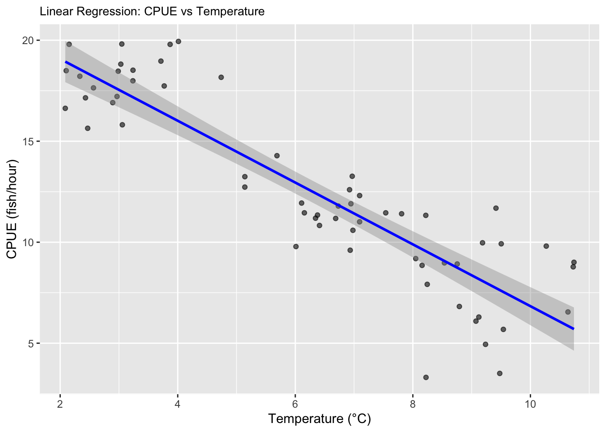

library(ggplot2)
library(dplyr)##
## Attaching package: 'dplyr'## The following objects are masked from 'package:stats':
##
## filter, lag## The following objects are masked from 'package:base':
##
## intersect, setdiff, setequal, union# Create the dataframe
?rnorm()
low <- data.frame(
temp_group = "Low (2-4.9°C)",
CPUE = rnorm(n = 20, mean = 18, sd = 1.2),
temperature = runif(20, 2, 4.9))
print(low)## temp_group CPUE temperature
## 1 Low (2-4.9°C) 18.49176 2.102723
## 2 Low (2-4.9°C) 16.90927 2.894233
## 3 Low (2-4.9°C) 18.16403 4.739052
## 4 Low (2-4.9°C) 17.21519 2.967240
## 5 Low (2-4.9°C) 15.64008 2.468065
## 6 Low (2-4.9°C) 19.81239 3.048556
## 7 Low (2-4.9°C) 16.62832 2.086770
## 8 Low (2-4.9°C) 18.96501 3.714125
## 9 Low (2-4.9°C) 18.81509 3.031670
## 10 Low (2-4.9°C) 18.21638 2.334705
## 11 Low (2-4.9°C) 17.14709 2.430502
## 12 Low (2-4.9°C) 18.46636 2.987518
## 13 Low (2-4.9°C) 17.64002 2.566809
## 14 Low (2-4.9°C) 18.51549 3.238843
## 15 Low (2-4.9°C) 17.73579 3.770052
## 16 Low (2-4.9°C) 15.81257 3.057632
## 17 Low (2-4.9°C) 17.99032 3.237038
## 18 Low (2-4.9°C) 19.79405 3.870421
## 19 Low (2-4.9°C) 19.79749 2.152623
## 20 Low (2-4.9°C) 19.94003 4.012127medium <- data.frame(
temp_group = "Medium (5-7.9°C)",
CPUE = rnorm(n = 20, mean = 12, sd = 1.5),
temperature = runif(20, 5, 7.9))
print(medium)## temp_group CPUE temperature
## 1 Medium (5-7.9°C) 11.938600 6.107339
## 2 Medium (5-7.9°C) 11.453766 7.538831
## 3 Medium (5-7.9°C) 9.602795 6.933937
## 4 Medium (5-7.9°C) 13.244273 5.141880
## 5 Medium (5-7.9°C) 11.903236 6.946314
## 6 Medium (5-7.9°C) 11.176925 6.686907
## 7 Medium (5-7.9°C) 11.344432 6.377967
## 8 Medium (5-7.9°C) 12.729125 5.141475
## 9 Medium (5-7.9°C) 11.010088 7.094247
## 10 Medium (5-7.9°C) 11.188693 6.344357
## 11 Medium (5-7.9°C) 11.453883 6.154492
## 12 Medium (5-7.9°C) 12.307934 7.094248
## 13 Medium (5-7.9°C) 10.828742 6.411708
## 14 Medium (5-7.9°C) 14.282856 5.688156
## 15 Medium (5-7.9°C) 11.407783 7.808581
## 16 Medium (5-7.9°C) 11.790666 6.732025
## 17 Medium (5-7.9°C) 12.597948 6.922835
## 18 Medium (5-7.9°C) 9.784362 6.011354
## 19 Medium (5-7.9°C) 10.590386 6.980192
## 20 Medium (5-7.9°C) 13.264881 6.968713high <- data.frame(
temp_group = "High (8-10.9°C)",
CPUE = rnorm(n = 20, mean = 8, sd = 2),
temperature = runif(20, 8, 10.9))
print(high)## temp_group CPUE temperature
## 1 High (8-10.9°C) 6.294073 9.122742
## 2 High (8-10.9°C) 6.547032 10.638677
## 3 High (8-10.9°C) 3.504796 9.478080
## 4 High (8-10.9°C) 9.188975 8.048538
## 5 High (8-10.9°C) 8.853694 8.157085
## 6 High (8-10.9°C) 11.329284 8.220140
## 7 High (8-10.9°C) 9.006154 10.741013
## 8 High (8-10.9°C) 8.780301 10.728099
## 9 High (8-10.9°C) 9.970275 9.185166
## 10 High (8-10.9°C) 8.921591 8.754799
## 11 High (8-10.9°C) 6.817733 8.791094
## 12 High (8-10.9°C) 8.975112 8.536939
## 13 High (8-10.9°C) 4.943874 9.236420
## 14 High (8-10.9°C) 9.806812 10.269482
## 15 High (8-10.9°C) 9.921124 9.503365
## 16 High (8-10.9°C) 6.091875 9.073177
## 17 High (8-10.9°C) 11.685133 9.413965
## 18 High (8-10.9°C) 5.684252 9.539796
## 19 High (8-10.9°C) 3.307066 8.223623
## 20 High (8-10.9°C) 7.914440 8.244499# combine all of the the datasets together to make a big dataset with low, medium, and high datasets
data <- rbind(low, medium, high)
print(data)## temp_group CPUE temperature
## 1 Low (2-4.9°C) 18.491758 2.102723
## 2 Low (2-4.9°C) 16.909266 2.894233
## 3 Low (2-4.9°C) 18.164032 4.739052
## 4 Low (2-4.9°C) 17.215192 2.967240
## 5 Low (2-4.9°C) 15.640075 2.468065
## 6 Low (2-4.9°C) 19.812391 3.048556
## 7 Low (2-4.9°C) 16.628318 2.086770
## 8 Low (2-4.9°C) 18.965010 3.714125
## 9 Low (2-4.9°C) 18.815086 3.031670
## 10 Low (2-4.9°C) 18.216381 2.334705
## 11 Low (2-4.9°C) 17.147087 2.430502
## 12 Low (2-4.9°C) 18.466359 2.987518
## 13 Low (2-4.9°C) 17.640024 2.566809
## 14 Low (2-4.9°C) 18.515487 3.238843
## 15 Low (2-4.9°C) 17.735790 3.770052
## 16 Low (2-4.9°C) 15.812570 3.057632
## 17 Low (2-4.9°C) 17.990315 3.237038
## 18 Low (2-4.9°C) 19.794053 3.870421
## 19 Low (2-4.9°C) 19.797495 2.152623
## 20 Low (2-4.9°C) 19.940035 4.012127
## 21 Medium (5-7.9°C) 11.938600 6.107339
## 22 Medium (5-7.9°C) 11.453766 7.538831
## 23 Medium (5-7.9°C) 9.602795 6.933937
## 24 Medium (5-7.9°C) 13.244273 5.141880
## 25 Medium (5-7.9°C) 11.903236 6.946314
## 26 Medium (5-7.9°C) 11.176925 6.686907
## 27 Medium (5-7.9°C) 11.344432 6.377967
## 28 Medium (5-7.9°C) 12.729125 5.141475
## 29 Medium (5-7.9°C) 11.010088 7.094247
## 30 Medium (5-7.9°C) 11.188693 6.344357
## 31 Medium (5-7.9°C) 11.453883 6.154492
## 32 Medium (5-7.9°C) 12.307934 7.094248
## 33 Medium (5-7.9°C) 10.828742 6.411708
## 34 Medium (5-7.9°C) 14.282856 5.688156
## 35 Medium (5-7.9°C) 11.407783 7.808581
## 36 Medium (5-7.9°C) 11.790666 6.732025
## 37 Medium (5-7.9°C) 12.597948 6.922835
## 38 Medium (5-7.9°C) 9.784362 6.011354
## 39 Medium (5-7.9°C) 10.590386 6.980192
## 40 Medium (5-7.9°C) 13.264881 6.968713
## 41 High (8-10.9°C) 6.294073 9.122742
## 42 High (8-10.9°C) 6.547032 10.638677
## 43 High (8-10.9°C) 3.504796 9.478080
## 44 High (8-10.9°C) 9.188975 8.048538
## 45 High (8-10.9°C) 8.853694 8.157085
## 46 High (8-10.9°C) 11.329284 8.220140
## 47 High (8-10.9°C) 9.006154 10.741013
## 48 High (8-10.9°C) 8.780301 10.728099
## 49 High (8-10.9°C) 9.970275 9.185166
## 50 High (8-10.9°C) 8.921591 8.754799
## 51 High (8-10.9°C) 6.817733 8.791094
## 52 High (8-10.9°C) 8.975112 8.536939
## 53 High (8-10.9°C) 4.943874 9.236420
## 54 High (8-10.9°C) 9.806812 10.269482
## 55 High (8-10.9°C) 9.921124 9.503365
## 56 High (8-10.9°C) 6.091875 9.073177
## 57 High (8-10.9°C) 11.685133 9.413965
## 58 High (8-10.9°C) 5.684252 9.539796
## 59 High (8-10.9°C) 3.307066 8.223623
## 60 High (8-10.9°C) 7.914440 8.244499# Question 4. Now write code to analyze the data (probably as an ANOVA or regression analysis, but possibly as a logistic regression or contingency table analysis. Write code to generate a useful graph of the data.
# First, we can do a linear regression on the continuous variables
# Fit linear model
linear_regression <- lm(CPUE ~ temperature, data = data)
print(linear_regression)##
## Call:
## lm(formula = CPUE ~ temperature, data = data)
##
## Coefficients:
## (Intercept) temperature
## 22.13 -1.53my_out <- c(slope=summary(linear_regression)$coefficients[2,1],
p_value=summary(linear_regression)$coefficients[2,4],
r_squared = summary(linear_regression)$r.squared)
print(summary(linear_regression))##
## Call:
## lm(formula = CPUE ~ temperature, data = data)
##
## Residuals:
## Min 1Q Median 3Q Max
## -6.2436 -1.3237 -0.3064 1.3252 3.9556
##
## Coefficients:
## Estimate Std. Error t value Pr(>|t|)
## (Intercept) 22.1326 0.6993 31.65 <2e-16 ***
## temperature -1.5300 0.1030 -14.86 <2e-16 ***
## ---
## Signif. codes: 0 '***' 0.001 '**' 0.01 '*' 0.05 '.' 0.1 ' ' 1
##
## Residual standard error: 2.098 on 58 degrees of freedom
## Multiple R-squared: 0.792, Adjusted R-squared: 0.7884
## F-statistic: 220.8 on 1 and 58 DF, p-value: < 2.2e-16# Visualizations
# Create scatter plot with regression line
salmon_plot <- ggplot(data, aes(x = temperature, y = CPUE)) +
geom_point(alpha = 0.6) +
geom_smooth(method = "lm", color = "blue") +
labs(
title = "Linear Regression: CPUE vs Temperature",
x = "Temperature (°C)",
y = "CPUE (fish/hour)"
) + theme(plot.title = element_text(size = 10));salmon_plot## `geom_smooth()` using formula = 'y ~ x'print(salmon_plot)## `geom_smooth()` using formula = 'y ~ x'
# Set seed for reproducibility
set.seed(25)
# Change sample sizes, decreasing sample sizes
m <- c(2,3,4,5,6,7,8,9,10,15)
for (i in seq_along(m)){
print(m[i])
low <- data.frame(
temp_group = "Low (2-4.9°C)",
CPUE = rnorm(n = m[i], mean = 10, sd = 1.2),
temperature = runif(m[i], 2, 4.9));low
medium <- data.frame(
temp_group = "Medium (5-7.9°C)",
CPUE = rnorm(n = m[i], mean = 6, sd = 1.3),
temperature = runif(m[i], 5, 7.9));medium
high <- data.frame(
temp_group = "High (8-10.9°C)",
CPUE = rnorm(n = m[i], mean = 4, sd = 1.3),
temperature = runif(m[i], 8, 10.9));high
data <- rbind(low, medium, high)
linear_regression <- lm(CPUE ~ temperature, data = data)
my_out <- c(slope=summary(linear_regression)$coefficients[2,1],
p_value=summary(linear_regression)$coefficients[2,4],
r_squared = summary(linear_regression)$r.squared);my_out
print(summary(linear_regression))
}## [1] 2
##
## Call:
## lm(formula = CPUE ~ temperature, data = data)
##
## Residuals:
## 1 2 3 4 5 6
## 0.8469007 1.2145919 -0.5198041 -2.8316596 1.2904690 -0.0004979
##
## Coefficients:
## Estimate Std. Error t value Pr(>|t|)
## (Intercept) 10.1884 1.8682 5.454 0.00549 **
## temperature -0.5462 0.2664 -2.050 0.10969
## ---
## Signif. codes: 0 '***' 0.001 '**' 0.01 '*' 0.05 '.' 0.1 ' ' 1
##
## Residual standard error: 1.743 on 4 degrees of freedom
## Multiple R-squared: 0.5123, Adjusted R-squared: 0.3904
## F-statistic: 4.202 on 1 and 4 DF, p-value: 0.1097
##
## [1] 3
##
## Call:
## lm(formula = CPUE ~ temperature, data = data)
##
## Residuals:
## Min 1Q Median 3Q Max
## -1.2387 -0.5525 -0.4107 0.4796 1.7739
##
## Coefficients:
## Estimate Std. Error t value Pr(>|t|)
## (Intercept) 10.0502 0.8776 11.452 8.7e-06 ***
## temperature -0.6029 0.1268 -4.755 0.00207 **
## ---
## Signif. codes: 0 '***' 0.001 '**' 0.01 '*' 0.05 '.' 0.1 ' ' 1
##
## Residual standard error: 1.133 on 7 degrees of freedom
## Multiple R-squared: 0.7636, Adjusted R-squared: 0.7298
## F-statistic: 22.61 on 1 and 7 DF, p-value: 0.002071
##
## [1] 4
##
## Call:
## lm(formula = CPUE ~ temperature, data = data)
##
## Residuals:
## Min 1Q Median 3Q Max
## -2.0370 -0.2571 0.2918 0.6447 1.1882
##
## Coefficients:
## Estimate Std. Error t value Pr(>|t|)
## (Intercept) 13.0428 0.7764 16.800 1.17e-08 ***
## temperature -1.0128 0.1111 -9.115 3.69e-06 ***
## ---
## Signif. codes: 0 '***' 0.001 '**' 0.01 '*' 0.05 '.' 0.1 ' ' 1
##
## Residual standard error: 1.049 on 10 degrees of freedom
## Multiple R-squared: 0.8926, Adjusted R-squared: 0.8818
## F-statistic: 83.08 on 1 and 10 DF, p-value: 3.691e-06
##
## [1] 5
##
## Call:
## lm(formula = CPUE ~ temperature, data = data)
##
## Residuals:
## Min 1Q Median 3Q Max
## -2.7083 -0.6493 -0.1143 1.0652 2.3842
##
## Coefficients:
## Estimate Std. Error t value Pr(>|t|)
## (Intercept) 12.2416 1.0519 11.638 3.02e-08 ***
## temperature -0.9881 0.1549 -6.379 2.42e-05 ***
## ---
## Signif. codes: 0 '***' 0.001 '**' 0.01 '*' 0.05 '.' 0.1 ' ' 1
##
## Residual standard error: 1.577 on 13 degrees of freedom
## Multiple R-squared: 0.7579, Adjusted R-squared: 0.7393
## F-statistic: 40.7 on 1 and 13 DF, p-value: 2.42e-05
##
## [1] 6
##
## Call:
## lm(formula = CPUE ~ temperature, data = data)
##
## Residuals:
## Min 1Q Median 3Q Max
## -2.6086 -0.7090 0.2239 0.6371 2.1014
##
## Coefficients:
## Estimate Std. Error t value Pr(>|t|)
## (Intercept) 12.9854 0.8334 15.58 4.32e-11 ***
## temperature -1.0271 0.1200 -8.56 2.28e-07 ***
## ---
## Signif. codes: 0 '***' 0.001 '**' 0.01 '*' 0.05 '.' 0.1 ' ' 1
##
## Residual standard error: 1.279 on 16 degrees of freedom
## Multiple R-squared: 0.8208, Adjusted R-squared: 0.8096
## F-statistic: 73.28 on 1 and 16 DF, p-value: 2.28e-07
##
## [1] 7
##
## Call:
## lm(formula = CPUE ~ temperature, data = data)
##
## Residuals:
## Min 1Q Median 3Q Max
## -3.0736 -1.4616 -0.1995 1.5237 3.8252
##
## Coefficients:
## Estimate Std. Error t value Pr(>|t|)
## (Intercept) 12.4245 1.1364 10.933 1.23e-09 ***
## temperature -0.8355 0.1631 -5.124 6.03e-05 ***
## ---
## Signif. codes: 0 '***' 0.001 '**' 0.01 '*' 0.05 '.' 0.1 ' ' 1
##
## Residual standard error: 2.075 on 19 degrees of freedom
## Multiple R-squared: 0.5802, Adjusted R-squared: 0.5581
## F-statistic: 26.26 on 1 and 19 DF, p-value: 6.03e-05
##
## [1] 8
##
## Call:
## lm(formula = CPUE ~ temperature, data = data)
##
## Residuals:
## Min 1Q Median 3Q Max
## -3.0045 -1.3996 0.1014 1.0751 2.1870
##
## Coefficients:
## Estimate Std. Error t value Pr(>|t|)
## (Intercept) 12.8518 0.8163 15.743 1.85e-13 ***
## temperature -0.9032 0.1143 -7.906 7.18e-08 ***
## ---
## Signif. codes: 0 '***' 0.001 '**' 0.01 '*' 0.05 '.' 0.1 ' ' 1
##
## Residual standard error: 1.586 on 22 degrees of freedom
## Multiple R-squared: 0.7396, Adjusted R-squared: 0.7278
## F-statistic: 62.5 on 1 and 22 DF, p-value: 7.184e-08
##
## [1] 9
##
## Call:
## lm(formula = CPUE ~ temperature, data = data)
##
## Residuals:
## Min 1Q Median 3Q Max
## -2.6962 -1.1016 -0.4546 0.9743 4.2637
##
## Coefficients:
## Estimate Std. Error t value Pr(>|t|)
## (Intercept) 13.2322 0.8820 15.003 5.22e-14 ***
## temperature -0.9206 0.1278 -7.202 1.51e-07 ***
## ---
## Signif. codes: 0 '***' 0.001 '**' 0.01 '*' 0.05 '.' 0.1 ' ' 1
##
## Residual standard error: 1.718 on 25 degrees of freedom
## Multiple R-squared: 0.6748, Adjusted R-squared: 0.6617
## F-statistic: 51.87 on 1 and 25 DF, p-value: 1.511e-07
##
## [1] 10
##
## Call:
## lm(formula = CPUE ~ temperature, data = data)
##
## Residuals:
## Min 1Q Median 3Q Max
## -2.53824 -0.83461 0.08895 0.78612 2.39261
##
## Coefficients:
## Estimate Std. Error t value Pr(>|t|)
## (Intercept) 11.93585 0.65594 18.197 < 2e-16 ***
## temperature -0.80439 0.09302 -8.648 2.15e-09 ***
## ---
## Signif. codes: 0 '***' 0.001 '**' 0.01 '*' 0.05 '.' 0.1 ' ' 1
##
## Residual standard error: 1.4 on 28 degrees of freedom
## Multiple R-squared: 0.7276, Adjusted R-squared: 0.7178
## F-statistic: 74.78 on 1 and 28 DF, p-value: 2.147e-09
##
## [1] 15
##
## Call:
## lm(formula = CPUE ~ temperature, data = data)
##
## Residuals:
## Min 1Q Median 3Q Max
## -3.0690 -1.2985 -0.1933 1.3796 2.8533
##
## Coefficients:
## Estimate Std. Error t value Pr(>|t|)
## (Intercept) 12.22348 0.65825 18.570 < 2e-16 ***
## temperature -0.85161 0.09315 -9.142 1.22e-11 ***
## ---
## Signif. codes: 0 '***' 0.001 '**' 0.01 '*' 0.05 '.' 0.1 ' ' 1
##
## Residual standard error: 1.61 on 43 degrees of freedom
## Multiple R-squared: 0.6603, Adjusted R-squared: 0.6524
## F-statistic: 83.58 on 1 and 43 DF, p-value: 1.222e-11# Change the means for each temp group for sample size of 20
mean_low <- c(5, 6, 7, 8, 9, 10, 11)
for (i in seq_along(mean_low)){
print(mean_low[i])
low <- data.frame(
temp_group = "Low (2-4.9°C)",
CPUE = rnorm(n = 20, mean = mean_low[i], sd = 1.2),
temperature = runif(20, 2, 4.9));low
medium <- data.frame(
temp_group = "Medium (5-7.9°C)",
CPUE = rnorm(n = m[i], mean = 6, sd = 1.3),
temperature = runif(m[i], 5, 7.9));medium
high <- data.frame(
temp_group = "High (8-10.9°C)",
CPUE = rnorm(n = m[i], mean = 4, sd = 1.3),
temperature = runif(m[i], 8, 10.9));high
data <- rbind(low, medium, high)
linear_regression <- lm(CPUE ~ temperature, data = data)
my_out <- c(slope=summary(linear_regression)$coefficients[2,1],
p_value=summary(linear_regression)$coefficients[2,4],
r_squared = summary(linear_regression)$r.squared);my_out
print(summary(linear_regression))
}## [1] 5
##
## Call:
## lm(formula = CPUE ~ temperature, data = data)
##
## Residuals:
## Min 1Q Median 3Q Max
## -2.9305 -0.6873 0.0905 1.0142 2.4402
##
## Coefficients:
## Estimate Std. Error t value Pr(>|t|)
## (Intercept) 3.9025 0.7308 5.340 2.32e-05 ***
## temperature 0.2206 0.1460 1.511 0.145
## ---
## Signif. codes: 0 '***' 0.001 '**' 0.01 '*' 0.05 '.' 0.1 ' ' 1
##
## Residual standard error: 1.523 on 22 degrees of freedom
## Multiple R-squared: 0.09404, Adjusted R-squared: 0.05286
## F-statistic: 2.284 on 1 and 22 DF, p-value: 0.145
##
## [1] 6
##
## Call:
## lm(formula = CPUE ~ temperature, data = data)
##
## Residuals:
## Min 1Q Median 3Q Max
## -2.1438 -0.7516 -0.1246 0.6296 2.1268
##
## Coefficients:
## Estimate Std. Error t value Pr(>|t|)
## (Intercept) 7.1362 0.5323 13.407 1.22e-12 ***
## temperature -0.4297 0.1146 -3.749 0.00099 ***
## ---
## Signif. codes: 0 '***' 0.001 '**' 0.01 '*' 0.05 '.' 0.1 ' ' 1
##
## Residual standard error: 1.109 on 24 degrees of freedom
## Multiple R-squared: 0.3694, Adjusted R-squared: 0.3431
## F-statistic: 14.06 on 1 and 24 DF, p-value: 0.0009903
##
## [1] 7
##
## Call:
## lm(formula = CPUE ~ temperature, data = data)
##
## Residuals:
## Min 1Q Median 3Q Max
## -2.0482 -0.4912 0.1494 0.4754 2.1363
##
## Coefficients:
## Estimate Std. Error t value Pr(>|t|)
## (Intercept) 8.95120 0.43078 20.78 < 2e-16 ***
## temperature -0.46463 0.07915 -5.87 3.44e-06 ***
## ---
## Signif. codes: 0 '***' 0.001 '**' 0.01 '*' 0.05 '.' 0.1 ' ' 1
##
## Residual standard error: 1.088 on 26 degrees of freedom
## Multiple R-squared: 0.5699, Adjusted R-squared: 0.5534
## F-statistic: 34.46 on 1 and 26 DF, p-value: 3.445e-06
##
## [1] 8
##
## Call:
## lm(formula = CPUE ~ temperature, data = data)
##
## Residuals:
## Min 1Q Median 3Q Max
## -2.90192 -1.09600 0.07461 1.03858 2.27477
##
## Coefficients:
## Estimate Std. Error t value Pr(>|t|)
## (Intercept) 10.3087 0.5958 17.302 < 2e-16 ***
## temperature -0.7039 0.1070 -6.578 3.93e-07 ***
## ---
## Signif. codes: 0 '***' 0.001 '**' 0.01 '*' 0.05 '.' 0.1 ' ' 1
##
## Residual standard error: 1.407 on 28 degrees of freedom
## Multiple R-squared: 0.6071, Adjusted R-squared: 0.5931
## F-statistic: 43.27 on 1 and 28 DF, p-value: 3.925e-07
##
## [1] 9
##
## Call:
## lm(formula = CPUE ~ temperature, data = data)
##
## Residuals:
## Min 1Q Median 3Q Max
## -3.7049 -1.1223 0.3037 1.1845 2.8334
##
## Coefficients:
## Estimate Std. Error t value Pr(>|t|)
## (Intercept) 12.4398 0.6118 20.33 < 2e-16 ***
## temperature -0.8269 0.1034 -8.00 6.27e-09 ***
## ---
## Signif. codes: 0 '***' 0.001 '**' 0.01 '*' 0.05 '.' 0.1 ' ' 1
##
## Residual standard error: 1.502 on 30 degrees of freedom
## Multiple R-squared: 0.6808, Adjusted R-squared: 0.6702
## F-statistic: 63.99 on 1 and 30 DF, p-value: 6.272e-09
##
## [1] 10
##
## Call:
## lm(formula = CPUE ~ temperature, data = data)
##
## Residuals:
## Min 1Q Median 3Q Max
## -2.33207 -1.01424 -0.04888 1.00854 2.40947
##
## Coefficients:
## Estimate Std. Error t value Pr(>|t|)
## (Intercept) 13.0303 0.5104 25.53 < 2e-16 ***
## temperature -0.9005 0.0858 -10.49 6.85e-12 ***
## ---
## Signif. codes: 0 '***' 0.001 '**' 0.01 '*' 0.05 '.' 0.1 ' ' 1
##
## Residual standard error: 1.321 on 32 degrees of freedom
## Multiple R-squared: 0.7749, Adjusted R-squared: 0.7679
## F-statistic: 110.2 on 1 and 32 DF, p-value: 6.854e-12
##
## [1] 11
##
## Call:
## lm(formula = CPUE ~ temperature, data = data)
##
## Residuals:
## Min 1Q Median 3Q Max
## -3.6385 -0.7122 0.1809 0.7864 3.2821
##
## Coefficients:
## Estimate Std. Error t value Pr(>|t|)
## (Intercept) 13.85992 0.61717 22.457 < 2e-16 ***
## temperature -0.97028 0.09893 -9.807 1.91e-11 ***
## ---
## Signif. codes: 0 '***' 0.001 '**' 0.01 '*' 0.05 '.' 0.1 ' ' 1
##
## Residual standard error: 1.533 on 34 degrees of freedom
## Multiple R-squared: 0.7388, Adjusted R-squared: 0.7312
## F-statistic: 96.19 on 1 and 34 DF, p-value: 1.915e-11